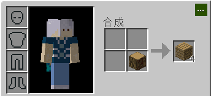
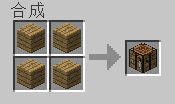

基本操作
通过键盘WSAD来移动人物,移动时按住shift防止从方块摔下去,快速按1次W再按住W可冲刺,单击左键攻击生物,按住左键破坏方块,单击右键放置方块,按住右键使用(吃)物品,鼠标滚轮切换物品,
按Q丢弃手上的物品,按T打开聊天框,按E打开物品栏,用身上四格合成栏,把原木变成木板
,四格都放木板
合成工作台,右键工作台,开始你的MC之旅~！
以下是增强MOD插件功能(非原版功能不一定对所有客户端有效)
按G打开内置合成大全,按R快速整理背包,箱子快速操作:按住shift+空格再左键点击物品,
搬运整个背包(箱子)东西,按住ctrl+shift再左键点击物品,搬运同类的所有物品.
基本设置
按下ESC调出菜单,点击《选项》进行设置,如无需要,可关闭音效来提高流畅度.进入《视频设置》调节平滑光照为Minimum来保证显示效果,关闭视角摇晃防止眩晕症.